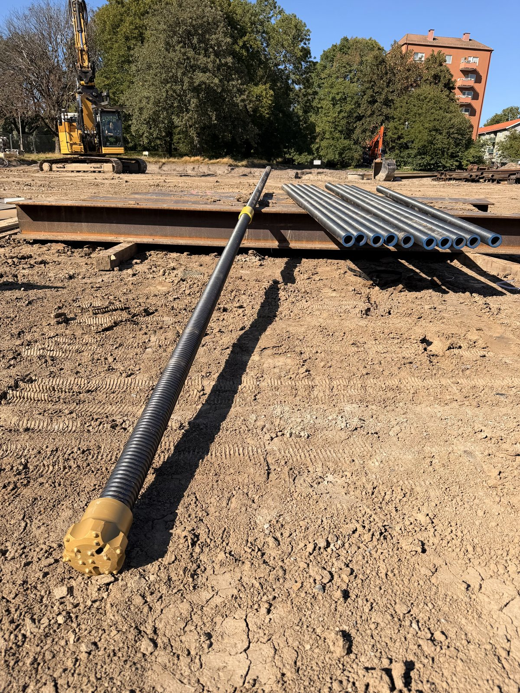
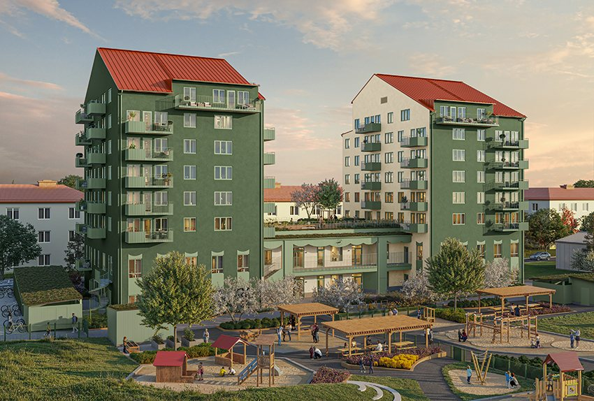
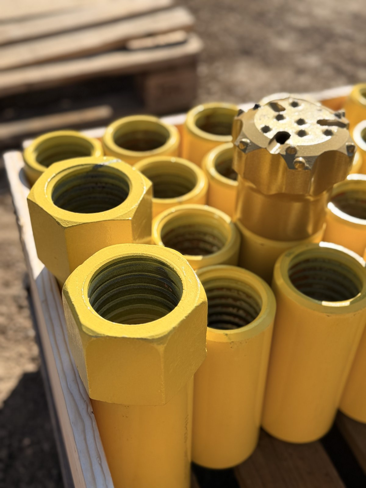
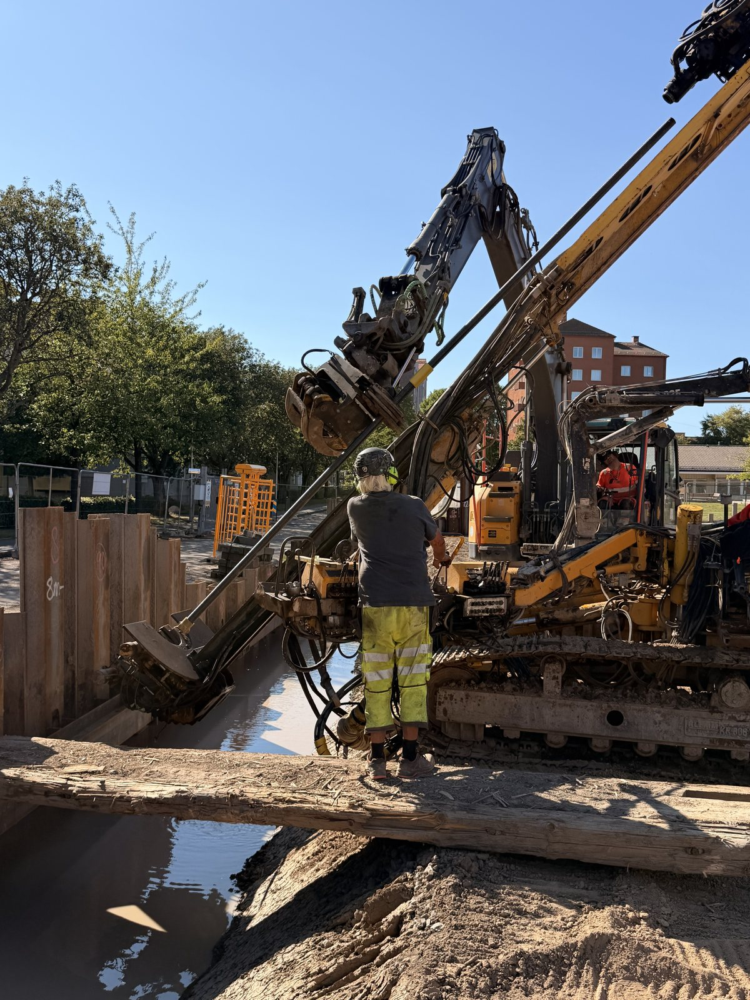
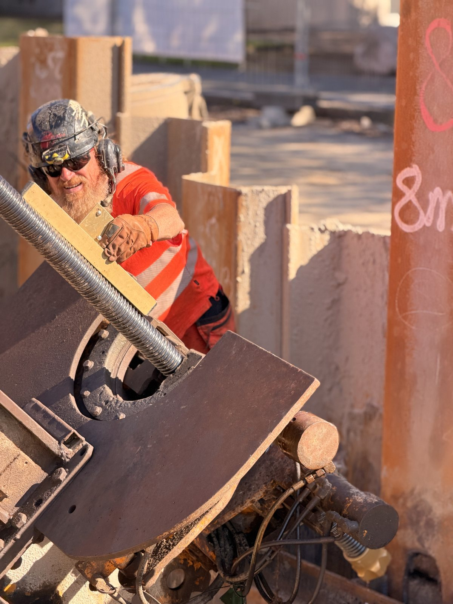
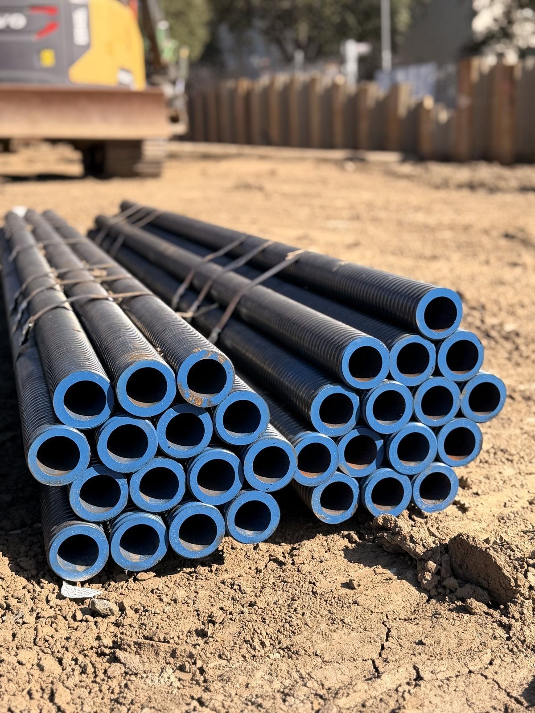

Project
Grönebacken
NASPS has supplied T76/51 anchors as tie-back anchoring for 700 m² of dowelled sheet piling to our customer GrundX, for the works on Botrygg's Grönebacken project in Kyrkbyn, Gothenburg.
The project comprises 68 new rental apartments, a preschool with eight departments and an underground parking garage.
The foundation works are technically demanding, including excavation and sheet piling in challenging ground conditions.
GrundX also carried out the sheet piling, and in weeks 39–40 they start on the drilled steel pipe piles for the foundation.
We thank GrundX for their trust and the good cooperation. NASPS contributes reliable deliveries, technical expertise and anchoring solutions adapted to demanding foundation projects.
- Client
- GrundX
- Service
- Supply of SDA
- Year
- 2026 -
- Location
- Gothenburg - Sweden







Get in Touch with NASPS
Collaboration, Work Enquires or Just Say Hello.
Contact us today, and we're here to guide you from design to construction.